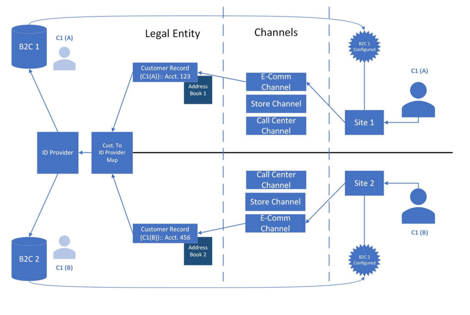

Mehrere B2C-Mandanten in einer Commerce-Umgebung konfigurieren
Important
Dynamics 365 Retail ist jetzt Dynamics 365 Commerce und bietet umfassende Handelsfunktionen für alle Kanäle – von E-Commerce über Shops bis hin zu Callcentern. Weitere Informationen zu diesen Änderungen finden Sie unter Microsoft Dynamics 365 Commerce.
In diesem Thema wird beschrieben, wann und wie mehrere Microsoft Azure Active Directory (Azure AD) Business-to-Consumer (B2C)-Mandanten pro Kanal für die Benutzerauthentifizierung in einer dedizierten Dynamics 365 Commerce-Umgebung eingerichtet werden können.
Übersicht
Dynamics 365 Commerce verwendet den Azure AD B2C-Cloud-Identitätsdienst zur Unterstützung von Benutzeranmeldeinformationen und Authentifizierungsströmen. Die Benutzer können die Authentifizierungsflüsse nutzen, um sich anzumelden, sich anzumelden und ihr Kennwort zurückzusetzen. Azure AD B2C speichert die sensiblen Authentifizierungsinformationen eines Benutzers, wie z.B. seinen Benutzernamen und sein Passwort. Der Benutzerdatensatz ist für jeden B2C-MiMandanten ter einzigartig und verwendet entweder die Anmeldedaten des Benutzernamens (E-Mail-Adresse) oder die Anmeldedaten des Anbieters der sozialen Identität.
In den meisten Fällen wird in einer Commerce-Umgebung ein einzelner Azure AD B2C-Mandanten verwendet. Commerce-Kunden können dann mehrere Sites in derselben Commerce-Umgebung erstellen und veröffentlichen, und auf diesen Sites werden dieselben Kundendaten verwendet. Wenn die Sites in der Umgebung jedoch als unterschiedliche Marken behandelt werden und den Benutzern als separate Unternehmen erscheinen sollen, kann ein B2C-Mandanten für den Kanal konfiguriert werden, der für die Trennung von Site und Marke verwendet wird.
Überlegungen, wenn mehrere B2C-Mandanten pro Kanal eingerichtet werden
Wenn jeder Kanal oder jede Website als separates Unternehmen behandelt wird, ist es oft die beste Option, getrennte juristische Personen für die Benutzerauthentifizierung in Commerce zu verwenden. Wenn Sie jedoch jeden Kanal/jede Website in derselben Umgebung und derselben juristischen Person behalten möchten, aber für jede Website eine separate Benutzerauthentifizierung wünschen, ist es wichtig, dass Sie die folgenden Punkte berücksichtigen, bevor Sie fortfahren:
Die Benutzer haben für jeden Kanal/jede Website ihre eigenen, eindeutigen Anmeldedaten.
Dieselbe Person kann zwei getrennte Konten pro Kanal/Site haben, da jedes Konto ein eindeutiger Eintrag in einem separaten B2C-Mieter ist.
In der Microsoft Dynamics-Umgebung werden separate Kundendatensätze für die Suche nach globalen Datensätzen zurückgegeben.
Wenn ein Benutzer dieselbe E-Mail-Adresse über verschiedene Kanäle/Sites hinweg verwendet, werden bei der globalen Kundensuche Ergebnisse für jeden Kanal/Site zurückgegeben. (Es wird ein Kanalindikator) angezeigt.
Das Adressbuch kann dazu verwendet werden, Benutzer zu gruppieren, sodass sie pro Kanal nachverfolgt werden können.
Die Anzahl der Kundendatensätze pro Kanal kann sich erhöhen, und diese Erhöhung kann die Leistung der globalen Kundensuche beeinträchtigen.
B2C-Mandanten müssen sorgfältig einem Kanal zugeordnet werden, um Situationen zu vermeiden, in denen sich Kunden für einen falschen Mandanten anmelden. Andernfalls kann es zu Verwirrung oder Problemen bei der Nachverfolgung kommen.
Die folgende Abbildung zeigt mehrere B2C-Mieter in einer Commerce-Umgebung.

Wenn Sie entscheiden, dass Ihr Unternehmen unterschiedliche B2C-Mandanten pro Kanal in derselben Commerce-Umgebung benötigt, füllen Sie die Verfahren in den folgenden Abschnitten aus, um diese Funktion zu beantragen.
Beantragen Sie, dass B2C pro Kanal in Ihrer Umgebung aktiviert wird.
Wenn Sie derzeit möchten, dass verschiedene B2C-Mandanten pro Kanal in derselben Commerce-Umgebung verfügbar sind, müssen Sie eine Anfrage an Dynamics 365 Commerce senden. Weitere Informationen finden Sie unter Unterstützung für Lifecycle Services (LCS), oder besprechen Sie dieses Problem mit Ihrem Ansprechpartner für Commerce-Lösungen.
Konfigurieren von B2C-Mandanten in Ihrer Umgebung
Um B2C-Mandanten in Ihrer Umgebung zu konfigurieren, führen Sie die entsprechenden Verfahren in diesem Abschnitt aus.
Azure AD B2C-Mandant hinzufügen
Um einen Azure AD B2C-Mandanten zu Ihrer Umgebung hinzuzufügen, gehen Sie wie folgt vor.
Melden Sie sich beim Commerce Site Builder für Ihre Umgebung als Systemadministrator an. Um einen Azure AD B2C-Mandanten zu konfigurieren, müssen Sie Systemadministrator für die Commerce-Umgebung sein.
Wählen Sie im linken Navigationsbereich Mandanteneinstellungen, um ihn zu erweitern.
Wählen Sie B2C-Einstellungen und dann Verwalten.
Wählen Sie B2C-Anwendung hinzufügen, und geben Sie dann die folgenden Informationen ein:
- Anwendungsname: Geben Sie den Namen ein, der für die Anwendung im Zusammenhang mit der Verwaltung der Anwendung in Commerce verwendet werden soll. Wir empfehlen Ihnen, den Anwendungsnamen zu verwenden, den Sie beim Einrichten der Azure AD B2C-Anwendung im Azure-Portal gewählt haben. Auf diese Weise können Sie dazu beitragen, Verwirrung zu vermeiden, wenn Sie B2C-Mandanten in Commerce verwalten.
- Mandantenname: Geben Sie den B2C-Mandantennamen so ein, wie er im Azure-Portal erscheint.
- Passwort-Richtlinien-ID vergessen: Geben Sie die Richtlinien-ID ein (den Namen der Richtlinie im Azure-Portal).
- Registrierungs-/Anmelde-Richtlinien-ID: Geben Sie die Richtlinien-ID ein (den Namen der Richtlinie im Azure-Portal).
- Client GUID: Geben Sie die Azure AD B2C-Mandanten-ID ein, wie sie im Azure-Portal erscheint (nicht die Anwendungs-ID für den B2C-Mandanten).
- Profilrichtlinien-ID bearbeiten: Geben Sie die Richtlinien-ID ein (den Namen der Richtlinie im Azure-Portal).
Wenn Sie mit der Eingabe dieser Informationen fertig sind, wählen Sie OK, um Ihre Änderungen zu sichern.
Note
Sie sollten Felder wie Umfang, Nicht interaktive Richtlinien-ID, Nicht interaktive Client-ID, Benutzerdefinierte Anmeldedomäne und Anmelde-Richtlinien-ID leer lassen, es sei denn, das Dynamics 365 Commerce-Team weist Sie an, sie einzustellen. Ihr neuer Azure AD B2C-Mandanten sollte nun in der Liste unter B2C-Anwendungen verwalten erscheinen.
Verwalten oder löschen eines Azure AD B2C-Mandanten
- Melden Sie sich beim Commerce Site Builder für Ihre Umgebung als Systemadministrator an. Um einen Azure AD B2C-Mandanten zu konfigurieren, müssen Sie Systemadministrator für die Commerce-Umgebung sein.
- Wählen Sie im linken Navigationsbereich Mandanteneinstellungen, um ihn zu erweitern.
- Wählen Sie B2C-Einstellungen und dann Verwalten.
- Um einen B2C-Mandanten zu bearbeiten, wählen Sie das Bleistiftsymbol daneben. Um einen B2C-Mandanten zu löschen, wählen Sie das Mülleimersymbol daneben.
- Wählen Sie Speichern, und wählen Sie dann Veröffentlichen, um Ihre Änderungen zu aktivieren.
Warning
Wenn ein B2C-Mandant für eine live/veröffentlichte Website konfiguriert ist, haben sich die Benutzer möglicherweise über Konten angemeldet, die auf dem Mandanten vorhanden sind. Wenn Sie einen konfigurierten Mandanten im Menü Mandanteneinstellungen > B2C-Mandant löschen, entfernen Sie die Zuordnung dieses B2C-Mandanten zu Websites, die mit beliebigen Kanälen des Mandanten verknüpft sind. In diesem Fall können sich Ihre Benutzer möglicherweise nicht mehr bei ihren Konten anmelden. Seien Sie daher äußerst vorsichtig, wenn Sie einen konfigurierten Mandanten löschen.
Wenn ein konfigurierter Mandanten gelöscht wird, werden der B2C-Mandant und die Datensätze weiterhin gepflegt, aber die Commerce-Systemkonfiguration dieses Mandanten wird geändert oder entfernt. Benutzer, die versuchen, sich bei der Site anzumelden oder anzumelden, legen einen neuen Kontodatensatz im Standard- oder neu zugeordneten B2C-Mandanten an, der für den Kanal der Site konfiguriert ist.
Konfigurieren Ihres Kanals mit einem B2C-Mandanten
- Melden Sie sich beim Commerce Site Builder für Ihre Umgebung als Systemadministrator an. Um einen Azure AD B2C-Mandanten zu konfigurieren, müssen Sie Systemadministrator für die Commerce-Umgebung sein.
- Wählen Sie im linken Navigationsbereich Site-Einstellungen aus, um den Bereich zu erweitern.
- Wählen Sie Kanäle, und wählen Sie dann den zu konfigurierenden Kanal.
- Wählen Sie im Eigenschaftsfenster auf der rechten Seite im Feld B2C-Anwendung wählen den konfigurierten Azure AD B2C-Mandanten, der für diesen Kanal verwendet werden soll.
- Wählen Sie in der Befehlsleiste Speichern und veröffentlichen, um die neue oder aktualisierte Konfiguration zu übernehmen.
Warning
Wenn Sie die dem Channel zugeordnete B2C-Anwendung ändern, entfernen Sie die aktuellen Referenzen, die für alle Benutzer, die sich bereits in der Umgebung angemeldet haben, eingerichtet wurden. In diesem Fall sind alle Referenzen, die mit der aktuell zugeordneten B2C-Anwendung verbunden sind, für die Benutzer nicht verfügbar. Ändern Sie daher eine Azure AD B2C-Konfiguration des Channels nur dann, wenn Sie den Channel zum ersten Mal einrichten und sich noch keine Benutzer anmelden konnten. Andernfalls müssen sich die Benutzer möglicherweise erneut anmelden, um einen Datensatz im neuen Azure AD B2C-Mandanten zu erstellen.
Zusätzliche Ressourcen
Neuen E-Commerce-Mandanten bereitstellen
Zuordnen einer Dynamics 365 Commerce-Website zu einem Onlinekanal
URL-Umleitungen in Massen hochladen (This is an external link)
Einrichten eines B2C-Mandanten in Commerce
Einrichten angepasster Seiten für die Benutzeranmeldungen
Hinzufügen von Unterstützung für ein Content Delivery Network (CDN)